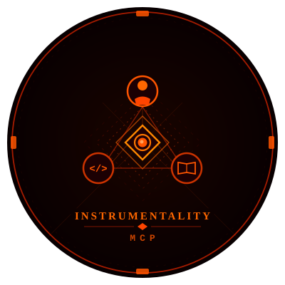

Structured Markdown beside your code, bidirectional drift detection, standards conformance — all driven through MCP tools. Works with Claude Code, Cursor, and any MCP-compatible agent. No API keys required.
Instrumentality-MCP creates a knowledge/ folder in your project and keeps it synchronized
with your codebase — in both directions. Code changes are detected and surfaced for KB
review (code→KB); KB spec changes are flagged for developers to verify the implementation still
matches (KB→code).
Instead of scattering product context across Notion, Confluence, and README files, everything lives as structured Markdown beside your code — versioned in git, loaded automatically into your agent's context when relevant.
knowledge/ lives in gitEvery tool the kb-mcp server exposes — grouped the same way the in-editor Capabilities panel groups them. Each tool is callable by an MCP-compatible agent, and the read-only tools also back the sidebar dashboards in the editor extensions.
Detect code↔KB misalignment and coordinate the sync state surfaced in the dashboard. Bidirectional drift, submodule coordination, aggregate health.
kb_drift
kb_sub
kb_status
Load context, scaffold, write, import, and enrich KB content. Two-phase tools load related files first so new content aligns with what's already there.
kb_get
kb_write
kb_scaffold
kb_import
kb_analyze
code_path_patterns — a bootstrap aid.kb_extract
kb_autotag
kb_autorelate
depends_on links (dry-run by default).Bootstrap, enforce, and evolve the KB. Standards-as-data, queue-driven conformance, schema migrations, and a bridge from KB context to issue trackers.
kb_init
kb_conform
kb_migrate
_rules.md changes, migrate existing KB files to match the new conventions.kb_issue
kb_upgrade
_rules.md so the repo picks up new keys safely.Read-only queries over the KB and its history — ask questions, trace impact, export, inspect schemas, audit decisions, and snapshot coverage health.
kb_ask
kb_impact
kb_inventory
kb_history
kb_schema
kb_export
Two git hooks write drift entries automatically — pre-push when you push, post-merge after merges (so cross-branch semantic conflicts surface even without a file-level git conflict).
Entries land in sync/code-drift.md or sync/kb-drift.md as a structured queue.
A PM or developer reviews each entry through their agent (which fetches the diff and explains it in
plain English), then decides: summarise into KB, revert the code,
or confirm the code already matches.
Every resolution lands in an append-only sync/drift-log/ — so the history of how the KB
drifted, and how it was reconciled, is itself versioned alongside the code.
The same lifecycle diagrams the in-editor extensions surface in their education banners. Four canonical flows cover the bidirectional drift loop and the standards-conformance loop — every drift queue entry follows one of these shapes, end to end.
WhatCode changed since the last KB sync.
TodoUpdate the KB to reflect the change — or acknowledge if the change doesn't affect the KB.
WhatKB content changed but the mapped code wasn't touched.
TodoVerify the code still matches, revise the KB, or acknowledge if benign.
WhatStandards rules waiting for your judgment.
TodoSubmit your judgment for these rules — pass, fail, or n/a.
WhatCode that broke a standard's rule.
TodoResolve via kb_conform — apply, exempt, promote, dismiss, or acknowledge.
Three more lifecycle flows ship with the extensions — Promotions, Lint Issues, and Mapping Diagnostics — surfaced in-editor as on-demand education banners
The same MCP server backs companion extensions for VSCode and Obsidian. Both render the queue state live — pipeline strip, drift entries with inline verdicts, conform-pending lists, lint diagnostics — and route resolution actions back through the MCP.
applied, exempted, promoted, dismissed — submitted straight to the MCP.knowledge/ folder.
Get the MCP running locally, point your agent at it, and bootstrap your first knowledge/
folder. Everything below is verbatim from the README.
Clone the repo and install the MCP server's Node dependencies.
$ git clone https://github.com/DEONSKY/project-instrumentality kb-mcp $ cd kb-mcp/knowledge/_mcp && npm install
Point your MCP-compatible agent at server.js using its absolute path. The
same config shape works for Claude Code (.claude/mcp.json) and Cursor
(.cursor/mcp.json).
{
"mcpServers": {
"kb": {
"command": "node",
"args": ["/absolute/path/to/kb-mcp/knowledge/_mcp/server.js"]
}
}
}
Ask your agent to initialize the knowledge base — or call kb_init directly.
// Via your agent: "Initialize the knowledge base for this project" // Or non-interactively: kb_init({ interactive: false, config: { projectName: "MyApp" } })
Most "agent knowledge" tooling assumes the agent is the source of truth — embedding everything into an opaque vector store, asking you to trust similarity scores, and silently rewriting documents on your behalf. Instrumentality inverts that.
The MCP server returns prompts and context, not generated content. Your agent does the reasoning, using whichever model you already pay for. There are no API keys to manage, no third-party services to trust, and no hidden state — every change to the knowledge base is a git commit you can review.
The KB lives next to your code. Specs, flows, schemas, ADRs, standards, validation
rules — all of them as structured Markdown under knowledge/. Branchable, diffable,
mergeable. When the code changes, drift detection surfaces what needs review. When the KB changes,
it surfaces what code may now be stale. The agent helps you reconcile; it never silently decides.